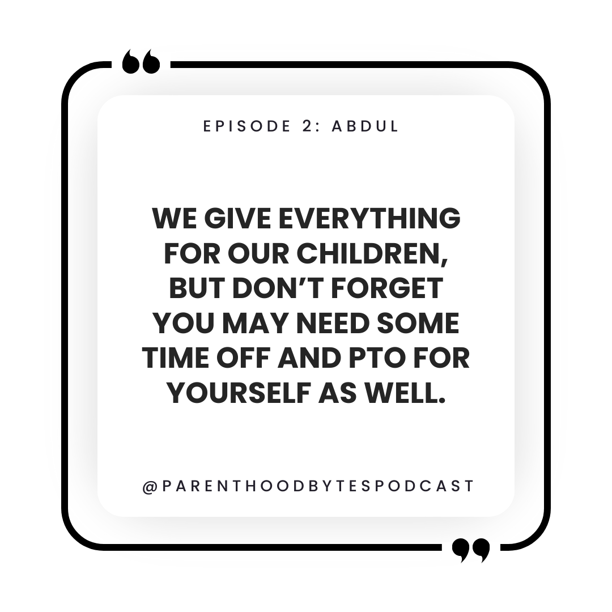

Episode 2: Abdul

Episode Notes
Abdul is an IT manager in Ireland, who juggles a demanding career at a large tech company while parenting two little ones, aged 4 and 2. Abdul shares invaluable insights for new parents and fellow parents in tech, urging them not to shy away from discussing parental leave - communication is key. Abdul advocates being open with your manager and team, while also encouraging parents to ask as many questions as they need to feel supported and empowered. He also talks about the importance of taking personal time off - not just for the family but for yourself as well. He highlights the need to avoid the dreaded burnout that so often lurks in the background.